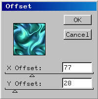

Impact Texture Studio Online Manual
Adjust Menu
File menu
Edit menu
Adjust menu
Generation menu
Distortion menu
Blur menu
Mix menu
Color menu
Misc menu
Moves the current layer

X offset: X offset to move the layer
to
Y offset: Y offset to move the layer
to
Flip X-axis
Flips the layer over the x-axis
Flip Y-axis
Flips the layer over the y-axis
Rotate 90° CW
Rotates the layer 90 degrees clockwise
Rotate 90° Anti-CW
Rotates the layer 90 degrees counterclockwise
Rotate 180°
Rotates the layer 180 degrees